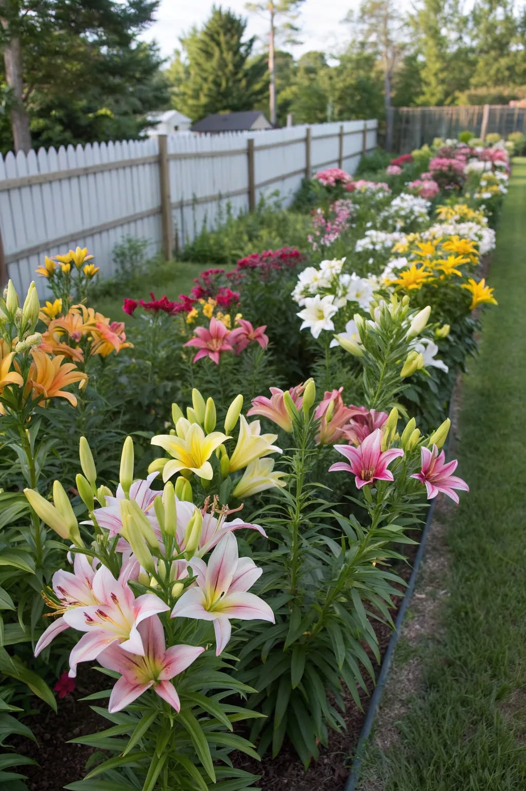
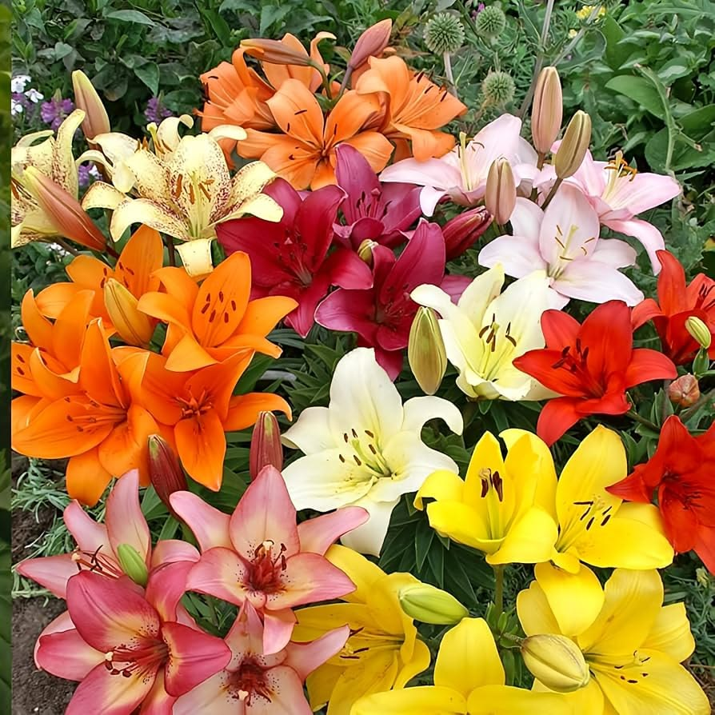
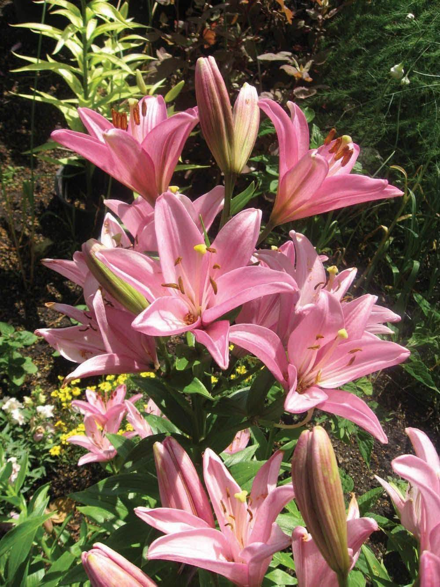
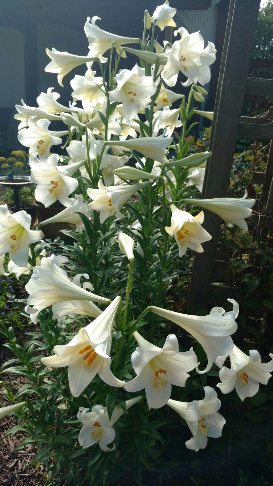
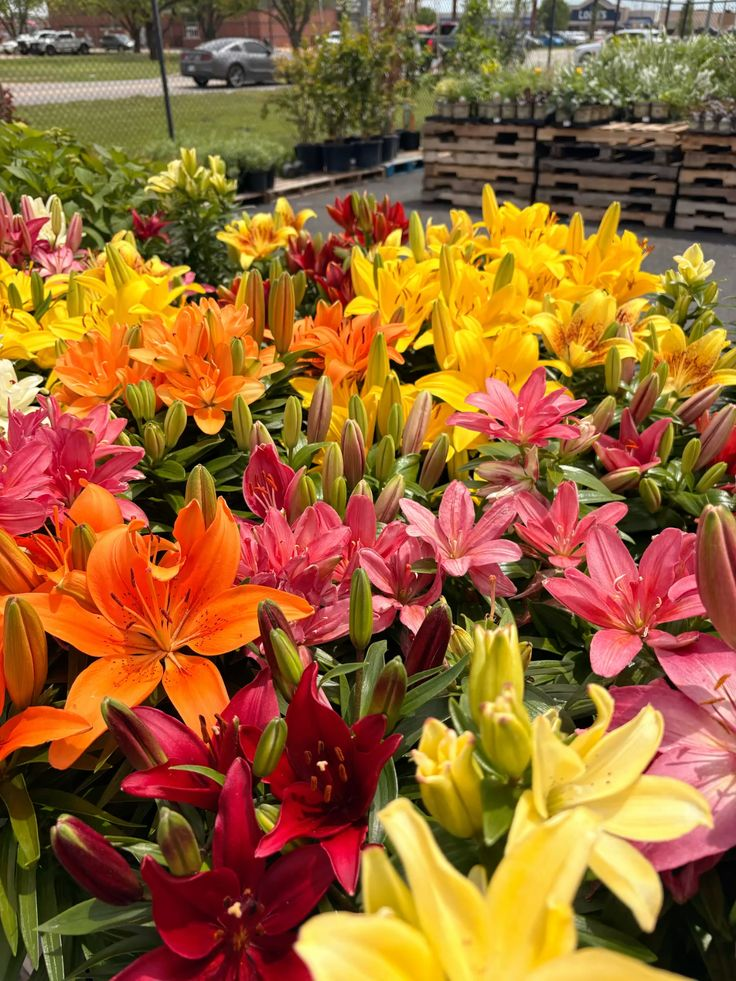

Lily
Lilium
Lilies are elegant flowers known for their large blooms, graceful shapes, and often sweet fragrance.

Lilium
Lilies are elegant flowers known for their large blooms, graceful shapes, and often sweet fragrance.

True lilies belong to the genus Lilium in the Liliaceae family. They are perennial flowering plants that commonly grow from bulbs.
Lilies are native to temperate regions of the Northern Hemisphere. They are cultivated around the world for their striking flowers.
Lily flowers can be trumpet-shaped, bowl-shaped, or recurved, depending on the species and variety. Many varieties also have a noticeable fragrance.
Lilies come in many forms, colors, and sizes.

Often brightly colored, with upward-facing flowers and little or no fragrance.

Known for large flowers, often with a strong, sweet fragrance.

Has long, trumpet-shaped flowers and is often fragrant.

White, pink, red, orange, yellow, and other combinations.
Some lilies have a strong fragrance, while others have little or no scent.
Lilies are perennial plants and can return for several years when grown in suitable conditions.
Individual lily flowers often last several days to about two weeks, depending on the variety and conditions.
Most lilies prefer full sun to partial shade, depending on the variety.
Well-drained soil with organic matter is generally suitable.
Keep the soil evenly moist during active growth, without waterlogging.
Temperature preferences vary by lily type. Many prefer cooler growing conditions.
Commonly grown from bulbs and sometimes propagated by scales or bulbils.
Proper watering, sunlight, and soil drainage help lilies grow and bloom.
Water when the soil begins to dry. Avoid leaving the bulbs in waterlogged soil.
Provide suitable sunlight for the lily variety. In hot climates, some varieties benefit from afternoon shade.
Apply a suitable fertilizer during active growth according to its instructions.
Remove faded flowers, but allow the leaves to remain until they naturally turn yellow.
Discover other flowers with elegant shapes and colorful blooms.